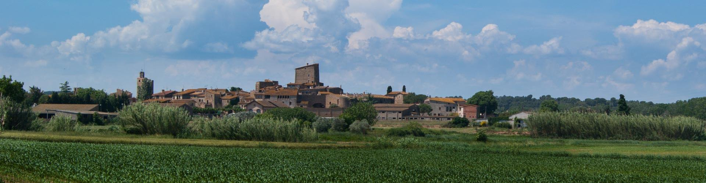

Ruta · Montgrí
En aquesta ruta descobrirem el patrimoni històric que conserven els carrers i edificis de Palau-Sator, Pals, Fontclara, Sant Feliu de Boada i Sant Julià de Boada , pobles amb molt passat i algunes…